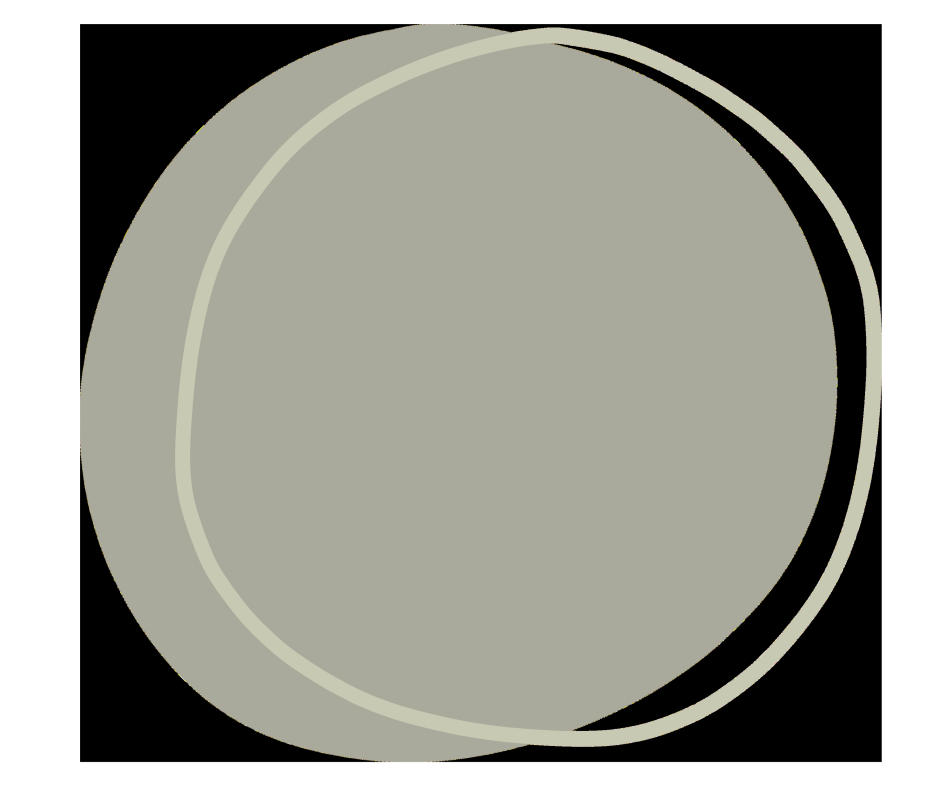
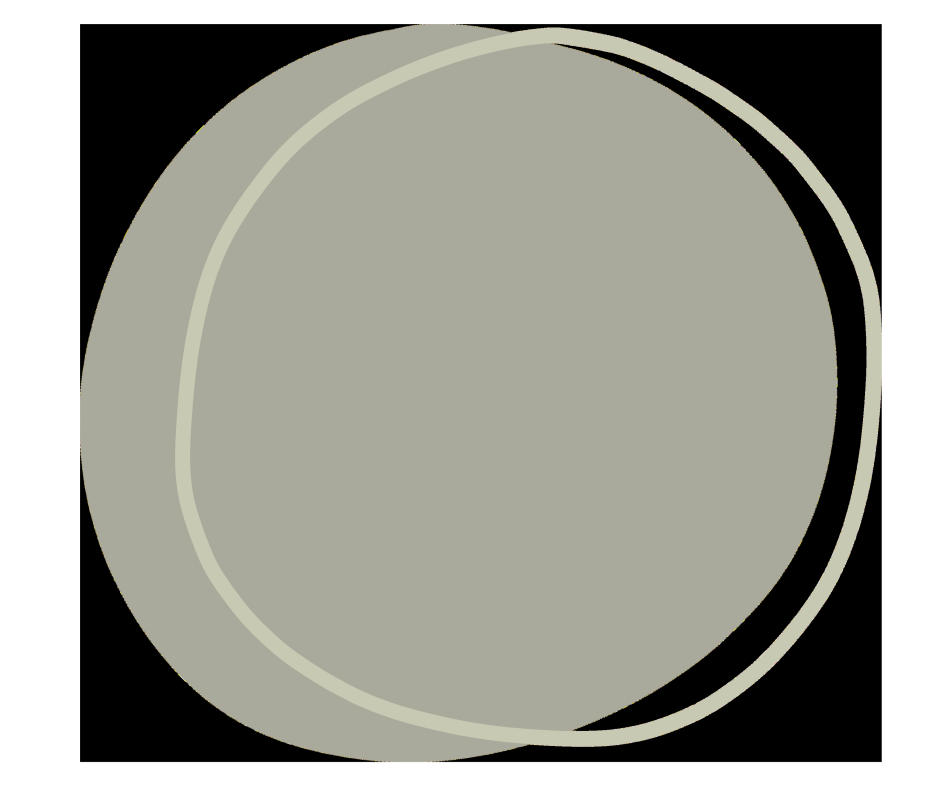

Ho conseguito la laurea triennale in Scienze e Tecniche Psicologiche e
la laurea magistrale in Psicologia Clinica presso l'Università di
Bologna.
Sto frequentando la Scuola di Specializzazione in Psicoterapia
Cognitivo-Comportamentale presso "Studi Cognitivi di Rimini". Questo è
un approccio che mette in relazione pensieri, emozioni e comportamenti
per comprenderli e trasformarli in modo efficace.
Faccio parte dell'associazione Psicologia Urbana e Creativa APS, con
cui promuovo progetti gratuiti per la cittadinanza su temi come la
prevenzione della violenza di genere, l'educazione alla pace e alla
NonViolenza.
 
